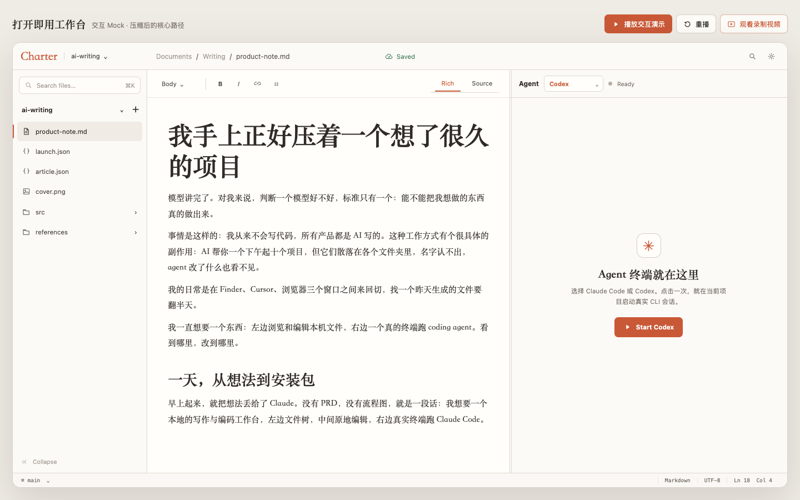
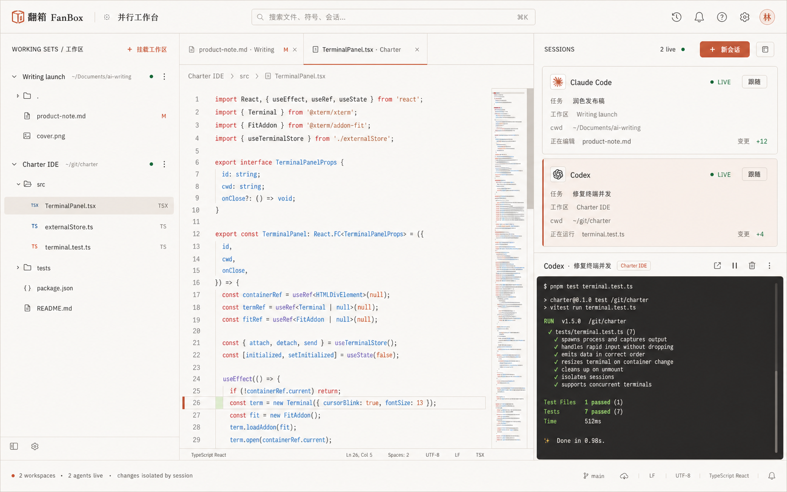

R-Code（R-Code）重构文档集
本目录包含使用 Rust 重构 R-Code 桌面应用的完整产品与开发链路文档。
文档按模块组织，涵盖架构、产品合同、技术选型、实施、测试、发布、恢复与可追溯性；所有交付页面均可离线浏览。
文档索引
总体设计
| 文档 | 说明 |
|---|---|
| 00-rust-rebuild-feasibility.html | 重构可行性分析（结论、技术选型、工作量估算） |
| 01-architecture-overview.html | 架构总览（进程拓扑、三层IA、会话模型、技术栈映射） |
| 14-implementation-roadmap.html | 实施路线图（阶段划分、里程碑、风险管理） |
| 15-testing-strategy.html | 测试策略（单元/集成/E2E/性能测试） |
| 16-product-scope-and-acceptance.html | 产品范围、端到端用户旅程、验收编号与不变量 |
| 17-delivery-release-and-operations.html | 构建、签名、发布、运维、恢复与上线签核 |
| 18-source-traceability-and-gap-closure.html | 当前项目覆盖矩阵与查漏补缺记录 |
| 19-reconstruction-runbook.html | 从空仓到可发布产品的实施顺序与交付检查 |
核心服务
| 文档 | 说明 |
|---|---|
| 02-tool-gateway-and-permission.html | Tool Gateway 与权限引擎 |
| 03-terminal-system.html | 终端系统（PTY、Shell集成、块模型、外部CLI检测） |
| 04-agent-runtime.html | Agent 运行时（Pi Adapter、Mock、事件流、状态机） |
| 05-session-orchestration.html | 会话编排（terminal.* 工具、控制门、指令面投影） |
| 06-persistence-and-data.html | 持久化与数据模型（SQLite schema、事务、blob store） |
| 12-git-and-search-services.html | Git 与搜索服务 |
| 13-workspace-document-services.html | Workspace、文档、验证、Skills 服务 |
界面与通信
| 文档 | 说明 |
|---|---|
| 07-security-model.html | 安全模型 |
| 08-ipc-and-process.html | IPC 与进程通信 |
| 09-render-layer.html | 渲染层（React、Monaco、xterm、状态管理） |
| 10-external-cli-integration.html | 外部 CLI 集成（检测、replay解析、控制门、安全） |
| 11-ui-ux-design-system.html | UI/UX 设计系统（Tokens、Mockup索引、组件规范） |
与共享模块的关系
依赖方向是单向的：agent-contracts（公共重构包） 定义跨产品可复用的合同、边界和质量门；R-Code（R-Code） 只定义桌面产品能力、Electron 落地方式与验收。重构时先冻结公共合同，再实现 R-Code，不能反过来从 UI 或某个服务私自改写公共语义。
- 将三个文件夹保持同级，或将
agent-contracts作为vendor/agent-contracts子模块；从 公共层总览 开始读取。 - 按公共层的 Provider、会话、工具、消息、MCP、配置、错误、IPC 合同完成可编译的共享边界，并执行 公共质量门。
- 再按本包的 R-Code 重构运行手册 实现领域服务、桌面进程、渲染层与产品验收。
- 每次公共层升级都回到 子模块与 workspace 集成，确认版本、适配器、回归和发布记录已同步。
| 公共 HTML 规范（上游） | R-Code 中的落点（下游） | 实施时的强制检查 |
|---|---|---|
| LLM Provider 合同、配置管理 | Agent Runtime、模型选择、密钥引用、mock/runtime 适配器 | Provider 接口只在适配层实现；UI 不直接持有密钥或厂商 SDK。 |
| 会话模型、消息类型、上下文压缩 | 会话编排、持久化、重放、变更与文档上下文 | 消息顺序、快照、压缩前后语义和恢复路径均有可重复测试。 |
| 工具宿主、MCP 客户端 | Tool Gateway、权限、外部 CLI、Git / 搜索 / 终端服务 | 每个工具声明权限、输入输出、超时、审计和失败归一化规则。 |
| 错误处理、IPC 传输、桌面壳边界 | Electron main / preload / renderer / agent worker 进程边界 | 只通过版本化 IPC 合同跨进程；错误可序列化、可呈现、可定位。 |
| 模块映射、API 合同、边界与追溯 | 领域包、服务包、桌面应用与交付追溯 | 每个 R-Code 包都能映射到需求、合同、测试、验收和发布证据。 |
封装后的启动顺序：打开 agent-contracts（公共重构包） 完成 P0–P15，再打开本页的文档索引并按 C0–C19 执行；两者之间只通过上述公共 HTML 合同连接。这样即使只交付 agent-contracts、r-code 与 tiny-hermes 三个文件夹，也不会依赖仓库其他说明文件。
正式规格与交付证据
C0–C19 是重构时的规范执行顺序；以下页面把当前项目的产品、验收、安全、发布、恢复和决策证据一并封装为 HTML，供实现者在需要精确细节时离线查阅。它们补充执行细节，不改变公共层优先、产品包后置的依赖方向。
HTML-only 边界：本包内的重构规范、正式规格、ADR、设计证据和导航页均为 .html。少量示例中出现的 AGENTS.md、SKILL.md、README.md 或 docs/plan.md 是待重构产品需要读写的工作区/技能数据文件，不是本交付包需要外部取得的文档。
关键决策
- 桌面框架：Tauri v2（Rust + 系统 WebView）
- 后端运行时：Rust + Tokio
- Agent 集成：MCP 解耦（路径 C）
- IPC：JSON-RPC 2.0 over Unix Socket / Named Pipe
- SQLite：rusqlite / sqlx
- PTY：portable-pty
- Git：git2 (libgit2 bindings)
设计 Mockup 索引
详见 11-ui-ux-design-system.html 第 4 节。
所有设计 mockup 位于 docs/design/ 目录，包含：
- 核心界面（Home, Task Room, Editor）
- 会话编排（Fusion, Director Stage）
- 终端系统（布局、文件链接、方向）
- Skills 系统（管理器、洞察、统计）
- 会话与历史（考古、Rail、回放）
- 其他功能（截屏浮卡、记忆、代码上下文）
ADR 文档位于 docs/adr/ 目录，包含 46 份架构决策记录。
可嵌入视觉参考
重构实现时可直接打开下列静态原型；它们随本目录一同打包，不依赖当前应用或外部网站。


更多可交互原型见 设计资产目录；每个实现切片应把对应的视觉状态、键盘行为、窄视口和失败态纳入验收。
验收标准
每个阶段结束时：
- 所有交付物已完成
- 相关测试已通过
- 文档已更新
- 应用保持可运行
- 性能基准未退化
文档维护
- 所有交付文档为离线可浏览的 HTML；代码示例、设计 mockup、图片和 ADR 通过相对链接嵌入
- 代码示例以 Rust 为主，保留必要的 TypeScript / UI 合同
- 架构图使用 ASCII、流程图或可点击 HTML 设计资产
- 定期 review 时更新覆盖矩阵、验收编号、链接检查与发布门禁